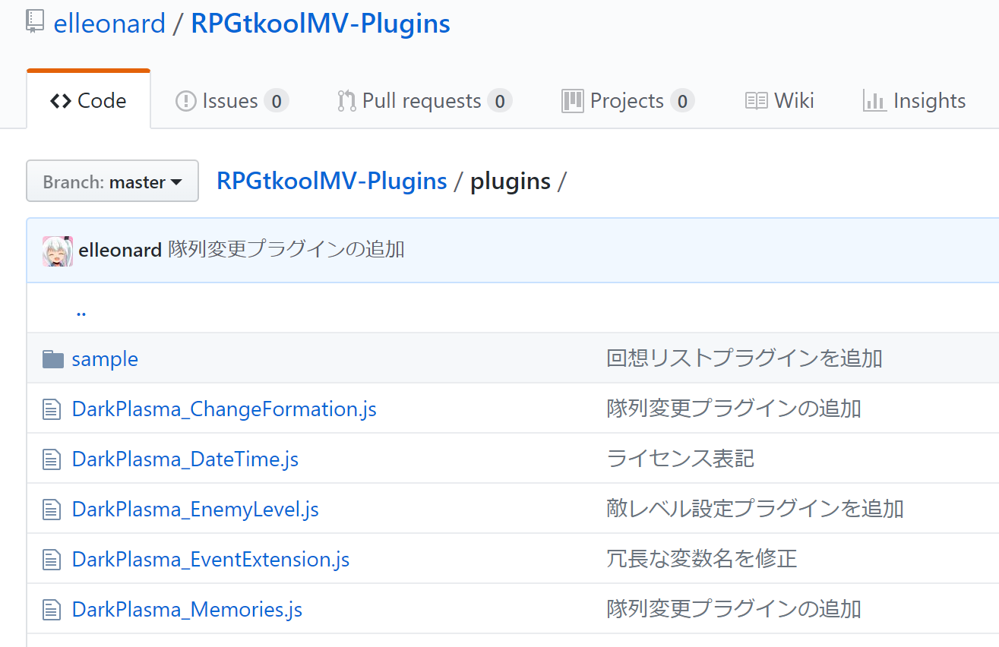

RPGツクールMV やさしいプラグインの書き方 応用編
目次
メリークリスマス！
この記事はRPGツクールMV Advent Calendar 2017の記事（後半）です。
前半の記事については RPGツクールMV やさしいプラグインの書き方 基礎編 へどうぞ
プラグインを修正する/不具合を報告する
ここからはプラグインを読む人、プラグインのバグの内容を説明する人、そしてプラグインをちょっとだけ修正する人のためのセクションです。
プラグインを利用するだけの人にも不具合について作者に尋ねることはできますが、ここで言う「不具合の報告」とは不具合の内容を過不足無く作者やコミッターに伝えることを言います。
プラグインをただ利用するだけよりもかなりハードルは高くなります。
プログラムを大部分理解するところまでは必要ではありませんが、javascriptのコードと実際の挙動を見比べてなんとなく「こういう処理をしているんだな」という想像を働かせるくらいの腕が必要になります。
プラグインの詳細な読み方については説明を省きますので、コードを読めない方はこの先の記事はぼんやり眺めるだけにするか、あるいは将来コードが読めるようになった時のことを想像しながら読んでみてください。
不具合を報告する/新機能を提案する
あなたはgithubで公開されているプラグインを利用し、その挙動に奇妙なバグを見つけました。
ゲーム内で特定の行動をした時、このプラグインが原因でゲーム画面の表示がおかしくなることに気付いたのです。
プラグインのバグに違いない。あなたはそう確信しました。
しかし、あなたにはプラグインのコードを理解するだけの知識がないか、あるいはバグの原因らしいコードを見つけることはできても直すだけの技術はありません。
なんとかプラグインの作者にこのことを伝えたいが、twitterでは140文字制限があって詳しい情報を伝えられません。
そんな時どうするべきか。
その答えはgithubのissue機能です。

githubのリポジトリ画面の上の方のタブに、 Issues というタブがあることがわかるかと思います。
ここでは、そのリポジトリに関する課題や不具合の報告を行うことができます。
もしかしたら、あなたが見つけた不具合を他の誰かも見つけてissueを立てているかもしれません。
issueの一覧を見て、もしあなたが見つけた不具合の報告が見当たらないのであれば、臆すること無くissueを立ててください。
プラグインの作者は自分のプラグインに潜んだバグを駆逐したいと考えています。
もし新たなバグがあなたによって見つかるのであれば、それはプラグインの作者にとっても喜ばしいことなのです。
issueは不具合の報告だけでなく、プラグインに新機能を追加してほしい時の要望にも使えます。
こういう機能を追加してほしい、と言った声は、（すべてが叶えられるわけではもちろんありませんが）プラグインを改良するための原動力になります。
ただし、特定の機能を持った新しいプラグインが欲しい場合に用いるべきではないでしょう。
そういった場合はより大勢が見ているであろう、twitterやフォーラムなどでぼやいてみるほうがプラグイン作者の目に止まりやすいです。
プラグインを修正する
あなたが見つけたプラグインのバグは、ちょっと手を加えれば直せる程度のものだとあなたは気づきました。
早速直して動かしてみて、ひとまず問題なく動作しているように見えました。
あなたはその修正を作者に伝えるために、githubでissueを立てたり、twitterでメンションを送るしかないのでしょうか。
いいえ、そんなことはありません。
githubは他の人のリポジトリに対して、修正や更新を取り込んでほしいという要求 Pull Request を送ることができます。
（Pull RequestはプルリクやPRと略されます）
もしこのリクエストが通って、あなたの修正がマージされたら、あなたの名前がそのプラグインの更新履歴に残るのです。
そして、それ以降そのプラグインを利用するすべてのゲーム開発者にとって貢献したことになります。
とある公開されたプラグインについて、それはあなたが欲しかったものだが、バグがあった。仕方がないのであなたはこっそり修正して使うことにした。
こういった状況では修正内容はあなたしか知らないし、あなた以外の人は同じ修正を自ら行うしか無く、複数のゲーム開発者が同じプラグインの同じバグを直すという不毛極まりない無駄が発生します。
結果としてあなたがプレイしたかったゲームの完成が遅れることだってあるかもしれません。
そしてそのバグの修正と直接関係のない更新があった時、あなたはそれに追従するためにあなた自身が加えた修正を適切に新バージョンに移植しなくてはならないのです。
しかし、あなたが修正内容を作者のリポジトリにPRとして送り、その修正が取り込まれたなら、どうでしょう。
あなた以外の人は同じ修正を行う必要なく、あなたが潰した厄介なバグに悩まされずにゲーム開発に専念できるのです。
あなた自身も、そのプラグインに取り込まれる他の更新に追従するための労力を大幅に削減できるでしょう。
バグを見つけ、もしそれがあなたの手で直せるものであったなら、積極的にPRを出してください。
あなたのコード修正が、あなたの後に続く幾多のゲーム開発者を救い、もしかしたらあなた自身をも助け、新たなゲームの誕生を促進するのです。
では、簡単に手順を説明します。
- 修正したいプラグインを含むリポジトリのgithubのページを開き、右上のForkを押す
- 自分のアカウントを選択する
- forkしたリポジトリをcloneする（あるいは、git remoteに追加する）
- 修正用のブランチを切り、コード修正をコミットする
- githubにpushし、New pull requestボタンを押してPRを出す
他の人のリポジトリにPRを出すにあたって、まずはforkという概念を説明する必要があります。
githubに公開されたリポジトリは、forkという操作によって自分のアカウントに紐付いた新たなリポジトリとして複製することができます。
フォークのように分岐するという意味で、forkした時点での内容が複製され、複製後のリポジトリは自由に編集することができます。
新しいコミットをgithub上に反映する（pushする）ことは、自分が権限を持ったリポジトリに対してしかできません。
（他の人のリポジトリを勝手に更新することはできません。当然ですね）
そこで、自分の更新を取り込んでもらうためには、その時点のリポジトリの複製を自分のものとして作り、一度そこにコミットする必要があるのです。
他の人のリポジトリをcloneしていた場合、clone先に自分のリポジトリを紐付けることができます。
git remote add myrepo git@github.com:username/repositoryname.git |
上記のようなコマンドで、ローカルのリポジトリとgithub上のリポジトリを紐付けることができます。git@～ というリポジトリのURLは、github上でリポジトリを開いた時、右端にある Clone or download というボタンから開く小ウィンドウからコピーできます。
fork先のリポジトリを改めてcloneしても良いし、他の人のリポジトリをcloneしたものがあるなら、そこに git remote add で紐付けてしまっても構いません。
ここでは myrepo という名前でfork先のリポジトリを紐付けたと仮定します。
そのローカルリポジトリ内で早速コード修正……の前に、修正用のブランチを切っておきましょう。
git checkout -b modify_original_shop_bug |
実は、cloneしたばっかりのリポジトリはデフォルトのブランチ（たいてい master ）を向いています。
Git Bashでフォルダ名の右に表示されている文字列は、今見ているブランチの名前です。master ブランチには（リポジトリの運用ルール次第ですが、たいていの場合）確定した更新のみを取り込みます。
今回の修正はまだ作者が取り込む前なので、 master とは異なる名前の modify_original_shop_bug というブランチを切りました。
（オリジナルショップを実現するようなプラグインの何らかのバグを修正する、という想定です。修正内容に応じて、ブランチの名前は適宜考えると良いでしょう）
ブランチとはその名の通り枝分かれのことで、 master が幹であるとするなら、今回切ったブランチは枝というわけです。master から切ったブランチは、その時点での master のコミット履歴を引き継ぎます。
そして、そのブランチにコミットしても、 master には何ら影響を及ぼしません。（枝が伸びるだけです）
ここで
git checkout master |
とすれば、すぐに master ブランチに向けることができます。
つまり、切った後のブランチにコミットした更新が気に食わない場合、そのブランチを捨てて master から新しくブランチを切り直すことができるのです。
では、今回切ったブランチに戻って修正の内容をコミットしましょう。
git checkout modify_original_shop_bug |
-b をつけると新しいブランチを作成するという意味になりますが、つけなかった場合は既に作ってあるブランチに移動する、という意味です。
このあと、プログラムファイルを修正して、それをコミットします。
git add OriginalShop.js |
git add で更新したファイルを指定し、コミットに含めるファイルリストに追加します。
その前に git diff コマンドで差分を確認するクセをつけても良いでしょう。git commit では、addで追加された更新ファイル一覧をコミットし、その履歴を記録します。
コミットしたら、pushしましょう。
git push myrepo modify_original_shop_bug |
git push で、remoteに指定したリポジトリに対して更新を同期します。
github上に更新が同期されたら、githubのリポジトリをブラウザで開いてみましょう。master 以外にpushした直後はPRを出すかどうかという帯が表示されます。
そこからでも良いですし、リポジトリ上の New pull request ボタンからでも良いので、PRを作りましょう。
左右にブランチ選択のボタンが出るので、左側のbaseに大本のリポジトリの master を、右側に自分の更新が入っているブランチを指定してPR情報を入力しましょう。
タイトルと説明文を書いて Create pull request ボタンを押せば、OK。
あとはプラグインの作者に「PR送ったから見てね」という連絡をすれば、だいたい見てもらえます。
ただし、見てもらっても必ず取り込んでもらえるわけではありません。
「こういうルールで書いているので、それに従ってちょっと修正してね」といったツッコミが入ることもあります。
もし更に修正が必要になったら、そのブランチに修正をコミットして、pushしましょう。
ここで想定しているのはごく軽微な修正ですので、だいたいサクっと取り込んでもらえるとは思いますが。
やさしいプラグインを書く
長らくお待たせいたしました。ここからは、プラグインを１から書く人に向けた内容になっています。
ようやく「やさしいプラグインの書き方」というタイトルに相応しい内容になります。
基本的なプラグインの書き方についてはあちらこちらで解説があるでしょうし、既にあるプラグインを参考に見よう見まねで書いてみることもできるはずですので、ここでは解説しません。
どう書けば「やさしいプラグイン」になるか、といった内容になります。
誰にとってやさしいプラグイン？
ここで想定するやさしさの対象は、
- プラグインを利用するだけの人
- プラグインを読んだりちょっとした修正を投げてくれる人
- 未来の自分
です。
これまでのセクションで1と2の人に向けた内容を書きましたが、そういった人たちにやさしいプラグインとは何か、どう書くべきかといった内容に言及します。
3についても、非常に重要です。
よく漫画やイラストを描く人が、「こんなネームを切った過去の自分を殺したい」「こんな雑な下書きを書いた過去の自分を殺したい」とぼやいていますが、プログラムでも同じことが起きます。
「こんなクソコードを書いた過去の自分を殺したい」などと未来の自分に言われないよう、最低限のお作法には則って書きましょう。
（それでも、未来の自分は過去の自分のコードに対して頭を抱えるものなのですが）
プラグインを利用者に読み書きさせない
そのプラグインを利用するために必要なことは @help で書いておきましょう。
実装を見なければ使えないようなプラグインは、プラグインを利用するだけの人にとって使えないプラグインです。
また、プラグインのコードを書き換えなければ使えないものなどもってのほかです。
バージョン管理の観点から、利用者が中に手を入れなければならないプラグインは許しがたい邪悪と言っても過言ではありません。
設定値を利用者に設定させたいのであれば、 @param で入力欄を作ってあげましょう。
もし、設定値が多くなりすぎるのであれば、jsonに切り出してしまうのも手です。
RPGツクールプロジェクトのdataフォルダ下の諸々の設定値と同じように、新しいjsonのデータを定義して、プラグインからそれを読み出すことができるのです。
プラグインを読みやすく
読みやすいプログラムの書き方、というものは多くのプログラミング言語で共通しています。
特に注意すべきは以下の通り
- インデントを揃える
- 変数や関数の名前には意味のある語を用いる（略語は極力用いない）
- 複雑な処理には適切なコメントを書く
- コード中に全角スペースを混ぜない
RPGツクールMVのプラグインは比較的初心者でも書きやすいものなので、見よう見まねで初学者が頑張って書くケースも多々見受けられます。
最初は「動けばそれで良い」という気持ちで頑張るのだが、なんとなくそれっぽい動きでも微妙に違う、自分が求めている動きにならない、と言った場合に苦労されると思います。
github上にpushして、うまく動かないことについて他のプラグイン作者に相談する場合、読みやすいコードでなければ相談される側の気力は大いに削がれるでしょう。
1はエディタによって解決できる問題です。
流石に「メモ帳」を使ってjavascriptを書く職人は今日日いないでしょうが、エディタの機能はプラグインの品質やコードを書く速さに直結します。
オートフォーマット機能を持ったエディタを利用することでインデントは自然と揃えられ、ぱっと見で嫌な顔をされる確率を大いに下げられるでしょう。
2は小規模なプラグインであれば気にしなくても問題になりにくいですが、規模がある程度大きくなってくると話は別です。
略語はそれがいったい本来どういう意味であったのか、書いた本人以外に伝わらなかったりします。
また、規模が大きくなると略語が増えて、いったい何の略語だったのか自分でも混乱する結果になりかねません。
多少シンボルの名前が長くなってしまうにしても、きちんとした英単語で名前をつけてくれると好印象です。
3は難しい問題ですが、頑張って書き上げた処理に対してその説明がないまま放置されると、未来の自分あるいは他の誰かがそれを読み解く考古学（あるいは暗号解読）が始まります。
あんまり大量にコメントばかりつけても鬱陶しいのでさじ加減は難しいところですが、こればかりは経験で覚えていくしかないのかもしれません。
4について、驚くべきことですが、javascriptはコード中に全角スペースが紛れ込んでいても正しく動作する（半角スペースとみなされる）仕様になっています。
ですので動作自体に問題はないが、コードを読む側からするととんでもなく気持ち悪い、ある種グロテスクですらあるので、混ぜないようにしてください。
もし不安であれば、全角スペースを見えるように表示してくれるエディタを用いるのが良いでしょう。
プラグインを公開する
さあ、あなたのプラグインが書き上がりました。
これを公開すればRPGツクールMVでゲームを作る開発者の少なくとも幾人かは喜んでくれることでしょう。
プラグインを公開する手法については、私自身も理想的な方法を実行できていない身ですので偉そうに指南を垂れるわけにもいかないのですが、私自身が考える理想的な公開の方法を列挙します。
- githubに作成したプラグインをpushする。
- 自身のサイト/ブログでプラグインの概要と利用方法を説明し、利用例のスクリーンショットとgithub上のプラグインのURLを貼り付ける。
- そのスクリーンショットとブログ記事のURLを添えてtwitterで発言する。
- （フォーラムなどでプラグインを紹介する）
私としては3までで十分であると考えています。（フォーラムでは、あなたのtwitterの発言をキャッチしてくれた人が紹介してくれるかもしれませんし）
サイトやブログに貼り付けるプラグインのURLには、githubのリポジトリ内の、該当プラグインのページから Raw をクリックして得られるURLがあると良いでしょう。
（もちろん、 git clone や git pull でローカルに取り込んでもらえるのも喜ばしいので、リポジトリそのもののURLを貼っても良いでしょう）
私は2をサボってgithubに上げてツイートするだけで済ませてしまっています。
そのうち使い方をわかりやすく説明した記事を書くほうが良いなと思いつつ、怠けてしまっています。
Readmeを書く
ソフトをダウンロードしてzipを解凍した時、readme.txtが同梱されている場面に出会ったことがある人は少なくないでしょう。
ソフトを利用する方法や問い合わせ先など、頻繁に見るわけではないが重要な情報が書かれているテキスト いわゆる説明書です。
githubのリポジトリにもそのreadmeを書く文化があります。
ただし、プレーンなテキストファイルではなくmarkdownで描かれることがほとんどです。
githubのリポジトリにはreadme.mdを自動的に読み込んで表示してくれる機能があります。
htmlやcss等の細かな制御こそできませんが、シンプルに読みやすい形にテキストを整形できるので、気になる方はmarkdownの書き方も調べてみると良いでしょう。
ライセンスを明記する
楽曲やイラストと同じように、プログラムは著作物です。
作者は当然ながら、自分が書いたプログラムがどのように利用されるかを自らの裁量である程度コントロールできなければいけません。
世に公開されている楽曲やイラストの素材に利用規約があるように、プログラムにもそういった決まりごとが存在しても当然良いのです。
そして、（特にソースコードの公開された）プログラムの世界では、そのプログラムを利用するにあたって利用者に求められたり認められる利用方法をライセンスという形で表現します。（オープンソースライセンスと呼ばれます。ここでは説明を噛み砕いて、単にライセンスと呼びます）
世に公開されたライセンスはいくつもありますが、広く使われているものの中では、ツクール公式にも推奨されているMITライセンスが最もわかりやすく、作者にとって楽でしょう。
MITライセンスは、二つの条件が指定されたライセンスです。
- 作者はこのプログラムに対していかなる責任も負わない。
- このプログラムのすべてのコピーに対し、著作権表示とMITライセンスの内容が含まれていなければならない。
1については読んだ通りです。何かバグがあってもそれに対して作者は責任を負いません。利用者はそれを承知していれば良いのです。
2については面倒に感じる方もいらっしゃるかもしれませんが、MITライセンスを採用したRPGツクールMVのプラグインの場合はたいてい、配布されているプラグインの中に著作権表示とMITライセンス全文へのリンクが最初から含まれています。
そして、そのプラグインを利用するということは、プラグインに書かれた著作権表示やリンクもろとも、ゲームプログラムの一部として取り込むことと同義です。
ですので、それを意図的に消したりしなければ、利用者は特に何もする必要がありません。
（わざわざスタッフロールの中にプラグインの作者の名前を書いたりしなくても良いのです。書いていただけるのはもちろん嬉しいですけどね！）
広く使われていて、利用者と作者の双方にとって楽なライセンスであるという点で、ライセンスに特別こだわらない人もとりあえずMITを指定しておけば間違いはないでしょう。
もちろん、こだわる人はしっかりと調べて自分に合ったライセンスを指定してください。
（ただ、GPLはできればやめてほしいですが）
Copyright (c) 2017 XXXX（作者名） |
この記述をソースコード中のわかりやすい位置（たいていは最上部）にコメントで記しておくだけで、そのプラグインをMITライセンスのもとで公開するという意思を示したことになります。
先に述べた通り、MITライセンスは利用者にほとんどその存在を意識させずに済む寛容なライセンスです。
寛容なライセンスを指定しておくことは、利用者の安心にも繋がります。
ライセンスは利用者にやさしいプラグインの大事な一要素というわけです。
逆に、ライセンスを指定しない場合はNo Licenseとみなされ、明示的に指定した場合よりもむしろ厳しい制約がかけられていると解釈されることがあります。
こういう条件で使ってもいいよという目印として非常にわかりやすく、共通の認識が既に存在するものですので、プラグインを公開される場合には是非メジャーなライセンスを指定してください。
まとめ
- 他の誰かのプラグインの不具合がわかったり、機能追加の要望があったらIssueを使ってみよう
- 他の誰かのプラグインの不具合を修正したら、本家にPRを出そう
- 利用者や読者、未来の自分に優しいプラグインを書こう
- 利用者にコードを読ませてはいけないし、書かせてはいけない
- 読者には読みやすいよう配慮しよう
- githubで公開したらreadmeを書こう
- ちゃんとライセンスを明記しよう
関連リンク
- RPGツクールMV Advent Calendar 2017 - Adventar
- お前らのSSH Keysの作り方は間違っている - Qiita
- GitHub
- セマンティック バージョニング 2.0.0 | Semantic Versioning
- RPGツクールMVのプラグイン MITライセンスについて | ぷらずま式改
筆者について
プラグインを書いているアカウントはDarkPlasma（@plasma_dark）ですが、そちらはR18アカウントです。
もし18歳未満の方が内容について筆者とコンタクトを取りたい場合は全年齢向けのNPlamsa（@elleonard_f）までご連絡ください。